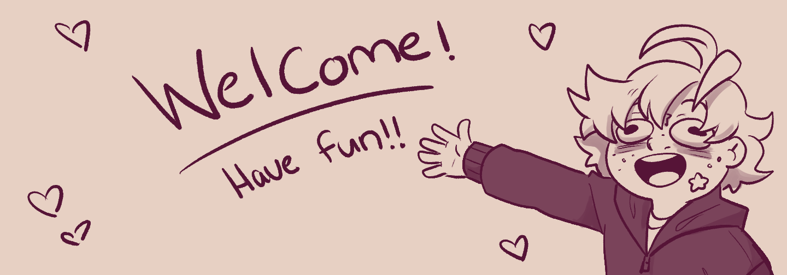

Welcome to the Pit!
Pick My Brain!

Hobbies!
- I mainly draw! Both traditionally and digitally! It's a huge part of who I am and always will be!
- I love making webcomics! I had one from 2019-2022 which is currently being rebooted! You can check it out if you want! Comic! :D
- As much as I love making comics, I also love reading them! And most books! Even though my manga phase isn't as strong as it used to be I also have my little collection of my favorites.
- I love writing as well. Though most of it is more drafts and story outlines it's still super fun for me!
Favorite Restraunts!
My Favorite Websites!
- Piapro
- Webtoons
- SketchDaily
Other Pages!
Page 2
Page 3